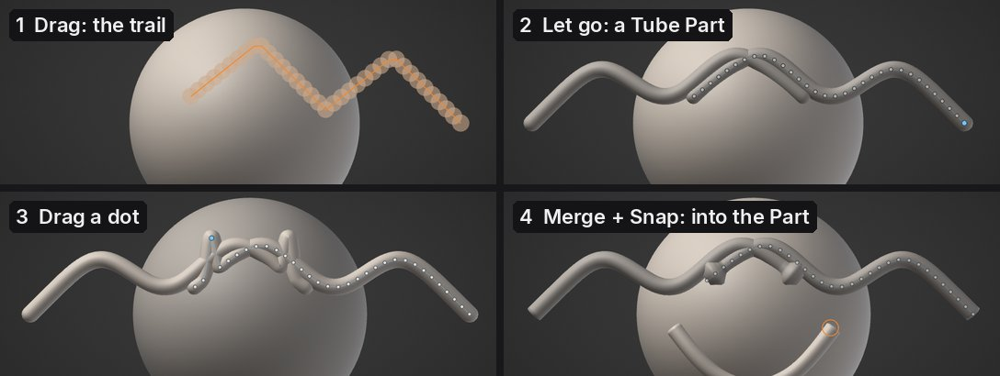
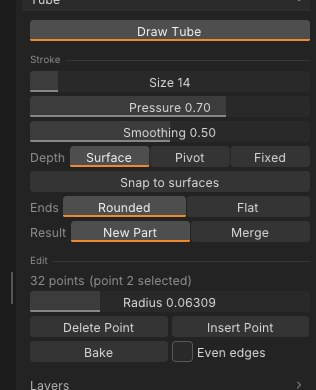

Tube: draw in 3D space
Tube draws clay tubes freely in the air, like a 3D pen: horns, vines, hair strands, tentacles, cables, piping or the wire of an armature, drawn where you want them instead of pulled out of a surface. Each stroke becomes a smooth curve with a tube swept along it, and its points stay editable until you bake it into a mesh to sculpt.


Draw a tube#
- Open Tool > Tube and press Draw Tube.
- Drag anywhere in the view: on the model, off it, or from one into the other. A trail shows the tube as you draw; let go and it is made.
- Ctrl+Z takes the tube away again.
A click without dragging drops a ball as big as Size: a quick way to block in volumes (with Merge, straight into the active Part). With the Square shape it is a rounded block.
While Draw Tube is on, Alt+drag still moves the view (and so do the right and middle buttons), so you can draw, turn the model, and draw again from another side. The brush ring is replaced by a circle as thick as the tube will be. Press Draw Tube again, Esc, any brush, or Draw / Move to stop drawing tubes.


| Setting | What it does |
|---|---|
| Size | How thick new tubes are: their radius on screen at the depth you draw at |
| Pressure | How much a light touch of the pen thins the tube (0: the same thickness all along). A mouse draws at full size |
| Smoothing | How much of the stroke's wobble is smoothed out before the tube is made |
| Point spacing | How far apart the tube's points are, in tube radii. Higher: fewer points, easier to edit. Lower: the tube follows the stroke more closely |
| Depth | Where in depth the stroke lies (below) |
| Snap to surfaces | On by default: where the pen is over a surface, the tube lies on it, half sunk in, and off it the stroke carries on in the air from where it left the surface. Off: every point lies on the drawing plane |
| Shape | The cross-section and taper (below) |
| Ends | Rounded or Flat |
| Result | New Part: each stroke is a Tube Part you can edit. Merge: the stroke goes into the active Part. Curve: each stroke is a Curve Part (below) |
Symmetry (X) draws the mirror copy across the X plane too, and keeps it as you edit the tube.
Depth: where the stroke lies#
A stroke on a flat screen needs a depth. The tube's points lie on a plane facing you:
- Surface (the default): through the surface under the pen where the stroke starts. A stroke that starts off the model uses the depth where your last stroke ended, or the pivot. So a stroke started on a head and pulled out sideways grows from that spot into the air.
- Pivot: through the view's pivot, the point the camera turns around.
- Fixed: at a set Distance from the camera. Orbit and draw again to build up a shape in 3D.
Snap to surfaces (on by default) makes a stroke follow the model: a strap round an arm, a seam, a vein; pulled off the model, it carries on into the air from the edge. Turn it off to draw on the plane alone, for example to pass in front of the model.
Shape: cross-section and taper#
Shape sets the cross-section: Circle, Square (sharp corners: beams, frames, planks), Triangle (ridges, blades, spines) or Ribbon (a flat strip: straps, cloth strips, leaves, hair cards). A ribbon lies flat towards you as you draw it; Thickness sets how flat it is. Turn turns a square, triangle or ribbon about the curve.
Taper start and Taper end narrow the tube to a point over that much of its length (0: none, 1: all of it): horns, claws, spikes, tails.
These set new tubes and the selected Tube Part, so you can change the shape after drawing. A slider shows the change on the tube as you drag it, and letting go is one undo step.
Profiles and modifiers#
Beside Circle, Square, Triangle and Ribbon, three profiles build more than an outline:
- Rope: three round strands wound round the curve (rope, cable, twine).
- Braid: three flat strands woven across each other (plaits, straps, braided hair).
- Sleeve: a hollow tube with open ends (sleeves, pipes, bracelets, hoses).
For any profile but Circle, Twist turns the cross-section a set number of degrees from the start to the end, and Spin turns it steadily, so many degrees per tube radius of length (a screw thread). Spread is how far apart a rope's or braid's strands are (0.5: touching), and for a sleeve how thick the wall is. Taper narrows strands and walls with the tube. Each one is a live slider on the selected Tube Part and one undo step.
Curves: draw first, tube later#
Set Result > Curve and each stroke becomes a Curve Part: a thin guide line you draw on or over the surface (Snap to surfaces and Depth work as for tubes). Its points move, resize and delete like a tube's.
- Resample sets the number of points exactly, evenly spaced along the curve (the ends stay). Fewer points give a smoother curve that is easier to edit.
- Tube from curve turns it into a tube with the Shape, Ends, Taper and the modifiers above. Undo brings the curve back; Size sets the tube's thickness when you draw, and the point Radius changes it per point.
Requested by Hameron (FXiT), GABO and Artizmo.
Edit the points#
A Tube Part's control points show as dots joined by a thin line. With Draw Tube on, the dots of every visible Tube Part show, but a plain drag always draws a new tube, even over a dot: hold Shift (or Ctrl, Alt) to edit a dot instead, which also selects its Part.
- Drag a dot to move it across the screen (Shift+drag while Draw Tube is on); the tube follows as you drag.
- Ctrl+drag a dot up or right to make the tube thicker there, down or left to make it thinner.
- Alt+click a dot to delete it.
- The dot you last dragged is selected (orange): Radius sets its thickness exactly, Insert Point adds a point halfway to the next one, Delete Point removes it.
- Rounded and Flat change the ends of the selected tube.
- Simplify takes out about a third of the points, the ones the curve needs least (the ends stay). Press it again for fewer still.
Each drag and button is one undo step. A Tube Part isn't sculpted while its points are editable: brushes leave it alone until you bake it. If you move, mirror or otherwise change the Part's mesh, its points no longer fit it and editing them is refused (undo the change, or bake it as it is).
Bake and Merge#
Bake turns the active Tube Part into a plain mesh to sculpt, in quads, with one face group for the body and one for each end. Tick Even edges first to bake it in triangles of one size instead, ready for dynamic topology. Undo brings the points back.
Result > Merge skips the Tube Part: each stroke goes straight into the active Part as one undo step, with even edges close to that Part's own edge length, so dynamic topology carries on smoothly across it. A Part with subdivision levels or a micro level can't take a merged tube; draw a new Part and merge it with the Parts list.
From a script#
The tube_* commands do the same from the Console, scripts and AI assistants:
tube_new points="0,0,0 0.5,0.4,0,0.08 1,0.2,0.3" radius=0.05 caps=round symmetry=x
tube_list
tube_set_point index=1 position="0.5,0.6,0" radius=0.1
tube_insert_point index=0
tube_delete_point index=2
tube_set caps=flat radius_scale=1.5
tube_set profile=ribbon thickness=0.2 turn=30 taper_end=0.5
tube_simplify keep=0.5
tube_new points="0,0,0 1,0.5,0 2,0,0.4" curve=true
tube_resample count=24
tube_from_curve radius=0.08 profile=rope twist=180 spread=0.6
tube_bake uniform=trueprofile is round, square, triangle, ribbon, rope, braid or sleeve (with twist, spin, spread); up="x,y,z" sets which way the cross-section's first flat side faces.
Each point is x,y,z or x,y,z,radius. With smooth=0.5 the points are treated as raw pen samples: smoothed and simplified into control points, as a drawn stroke is (spacing= sets how far apart, in radii). merge=true puts the tube into the active Part.